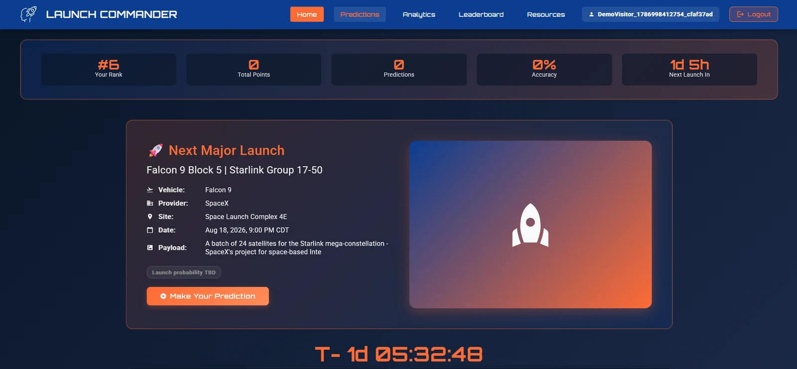

Live application
Full-stack · Production migration
Launch Commander
A MEAN-stack aerospace application combining live launch data, predictions, authentication, scoring, and leaderboards. Its deployment history became a practical study in portability, recovery, and production operations.